Die Koordinatorinnen und Ansprechpartner
Montag, Mittwoch und Freitag von 9:00 bis 12:00 Uhr sowie nach Vereinbarung erreichbar.
Büro und Koordination
Koordinatorinnen
Der erste Schritt ist oft der schwerste. Wir machen ihn gemeinsam.
Unsere Koordinatorinnen kennen sich aus und sind für schwerstkranke Menschen und ihre Angehörigen da.
Sie sind meist die ersten Menschen, mit denen Sie bei uns in Kontakt kommen. Der Kontakt ist unkompliziert: telefonisch oder telefonisch unter 04421 745258 oder persönlich im Gespräch, auf Wunsch auch bei Ihnen zu Hause.
Wir hören hin und schauen gemeinsam, was Sie brauchen.
In einem ersten Gespräch nehmen wir uns Zeit für Ihre Situation und Ihre Fragen. Wir informieren Sie über unsere Möglichkeiten und besprechen gemeinsam, welche Unterstützung für Sie und Ihre Familie passend ist.
Dabei kann es zum Beispiel um folgende Fragen gehen:
- Wer wünscht sich Unterstützung? Der erkrankte Mensch, Angehörige oder beide?
- Welche Art von Begleitung ist gewünscht?
- Wie oft und wie lange soll die Begleitung stattfinden?
- Welche Unterstützung gibt es bereits?
- Was wird zusätzlich gebraucht?
Auch die palliative Situation und die Versorgung am Lebensende können Themen sein. Wenn es hilft, bauen unsere Koordinatorinnen ein Netzwerk mit auf, aus Familie, Pflegedienst, Ärztinnen und Ärzten und weiteren Menschen, die unterstützen können.
Auf Wunsch nehmen sie auch Kontakt zu den beteiligten Personen auf und stimmen die nächsten Schritte gemeinsam mit Ihnen ab.
Sie müssen nicht alles allein organisieren. Wir helfen Ihnen dabei, den passenden Weg zu finden.
Unsere Bürokraft
Ein freundliches „Hallo“ am anderen Ende.
Unsere Bürokraft ist häufig die erste Stimme, die Sie bei uns hören.
Sie nimmt Ihr Anliegen entgegen, beantwortet erste Fragen und sorgt dafür, dass Sie schnell die richtige Ansprechpartnerin erreichen.
Sie kennt sich mit unserem Hospizdienst und unseren Angeboten gut aus.
Sie wissen nicht, wer für Ihr Anliegen zuständig ist? Kein Problem, wir kümmern uns darum.
Beate Richter
Koordinatorin
Stefanie Gründler
Koordinatorin
Sandra Gimmel
Bürokraft
Der Vorstand
Der Ambulante Hospizdienst Wilhelmshaven-Friesland e. V. ist ein eingetragener, gemeinnütziger Verein.
Wir arbeiten überkonfessionell und parteiunabhängig. Für uns zählen die Menschen, die wir begleiten, und ihre persönlichen Wünsche und Bedürfnisse.
Geleitet wird unser Verein von einem ehrenamtlichen Vorstand. Er entscheidet über die Richtung unserer Arbeit und sorgt für gute Bedingungen, damit unsere Mitarbeitenden, haupt- wie ehrenamtlich, zuverlässig und wertschätzend begleiten können.
Rolf Heßelbarth
Vorsitzender
Cathy Latour
2. Vorsitzende
Petra Schulz
Schatzmeisterin
Name folgt
Schriftführerin
Anna Janssen
Beisitzerin
Sabine Mair
Beisitzerin
Unser Begleitteam
Zeit geben. Da sein.
Unser Begleitteam besteht aus ehrenamtlich engagierten Vereinsmitgliedern. Sie begleiten schwerstkranke und sterbende Menschen sowie ihre Angehörigen und unterstützen Menschen in Trauer.
Sie geben etwas, das am Lebensende besonders wertvoll ist: Zeit.
Zeit für ein Gespräch.
Zeit für einen Spaziergang.
Zeit zum Vorlesen.
Zeit zum gemeinsamen Schweigen.
Dabei geht es nicht darum, etwas „richtig“ zu machen. Es geht darum, da zu sein: zuzuhören, auszuhalten und den Menschen so anzunehmen, wie er ist.
Begleitung ist persönlich
Jede Begleitung ist anders und richtet sich nach den Wünschen und Bedürfnissen der Menschen und ihrer Angehörigen.
Unsere Ehrenamtlichen begleiten dort, wo sie gebraucht werden: zu Hause, im Krankenhaus oder im Pflegeheim.
Wie oft und wann eine Begleitung stattfindet, wird individuell vereinbart.
Oft entsteht dabei eine besondere Verbindung. Vertrauen wächst, Gespräche werden persönlicher und manchmal entsteht für eine begrenzte Zeit sogar Freundschaft.
Wir begleiten, damit niemand allein sein muss.
Gut vorbereitet. Gut begleitet.
Ehrenamtliche Hospizarbeit ist eine verantwortungsvolle Aufgabe. Deshalb werden unsere Mitarbeiterinnen und Mitarbeiter intensiv auf ihre Tätigkeit vorbereitet und regelmäßig weitergebildet.
Jährlich bieten wir Vorbereitungsseminare für die ambulante Hospizarbeit an.
Auch während ihrer Tätigkeit sind unsere Ehrenamtlichen nicht auf sich allein gestellt. Regelmäßige Supervision hilft ihnen, das Erlebte zu verarbeiten, eigene Grenzen zu spüren und die richtige Nähe zu finden.
Bei regelmäßigen Gruppenabenden kommt das Begleitteam zusammen, tauscht Erfahrungen aus und lernt voneinander.
Hospizarbeit sichtbar machen
Neben der direkten Begleitung gehört es zum Einsatz des Begleitteams, nach außen zu gehen und zu erzählen, was Hospizarbeit bedeutet.
Wir möchten über Sterben, Tod und Trauer sprechen: offen, verständlich und ohne Berührungsängste.
Deshalb sind wir bei Veranstaltungen, auf Messen und mit Infoständen unterwegs.
Unser Ziel: Tod und Sterben sollen ihren Platz mitten im Leben haben. Wenn wir darüber sprechen, können Ängste kleiner werden und wir können uns bewusster mit dem auseinandersetzen, was am Ende des Lebens wichtig ist.
Mehr zum Einstieg auf der Seite Mitarbeit.
Auf dieser Seite sehen Sie einige Gesichter unserer Ehrenamtlichen.
Unser Begleitteam zeigen
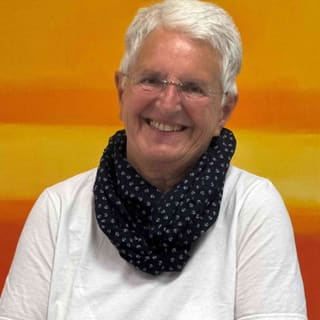
Ursula Adam
Meike Böhme
Elke Stalze-Straus
Silvia Adak
Norbert Benning
Hannelore Berger
Tanja Bohlen
Maike Braun
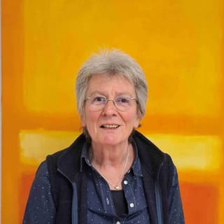
Christiane Brokmann-Nooren
Irene Budde
Helga Büchel
Yuko Caldewey
Luminita Carpenean
Barbara Cornelsen
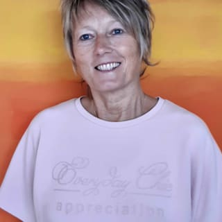
Gisela Cramer
Elisabeth Dierßen
Iris Essmeyer
Nadine Faulhaber
Anita Filipczyk
Erdmute Fuhrmann
Thorsten Gerdes
Petra Germeroth
Petra Gidwill
Petra Gottschalk
Beate Greulich
Regina Grimm
Erika Gärtner
Anja Heinisch
Rüdiger Heinrich
Maren Helling
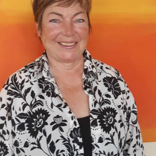
Elena Hildebrand
Birgit Holtz
Reinhold Jacobs
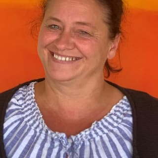
Nannette Janssen
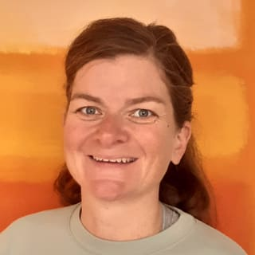
Melanie Junge
Beate Jürgens
Carola Kaiser
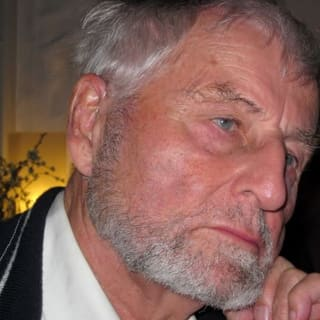
Dr. Joachim Krug
Hilde Krug
Hildburg Kruse
Heide Kämmerling
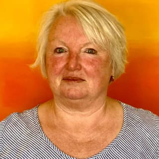
Doris König
Waltraud Küpker
Konrad Lappe
Tanja Ley
Jürgen Looft
Silke Lönnnecker
Silvia Mackenberg
Dieter Mattheeßen
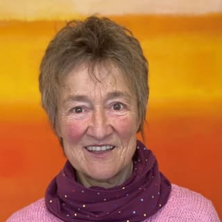
Ulla Mattheeßen
Jörg Meyer
Egbert Meyer
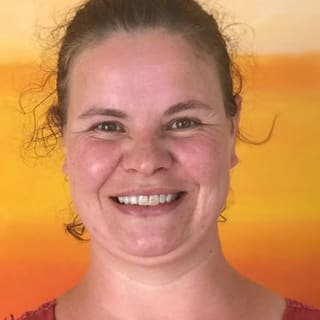
Kristina Meyerhoff
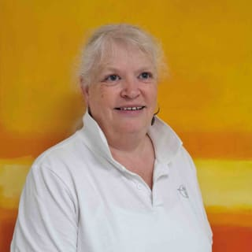
Gudrun Murina
Susanne Naas
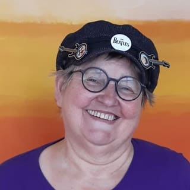
Freya Nau
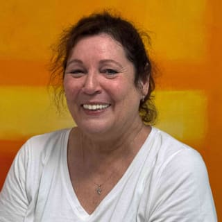
Andrea Neuking
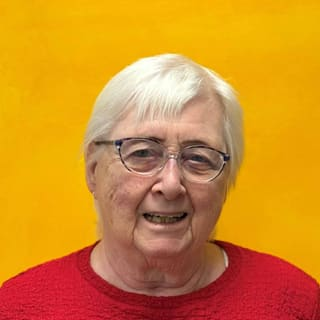
Heidrun Peeks
Sonja Pfaff
Silvia Rettmer
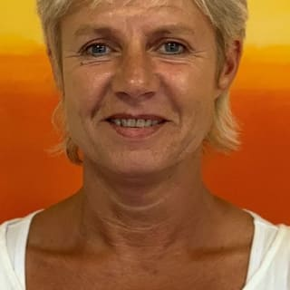
Marion Riedel-Brummack
Susanne Röben
Jürgen Sauer
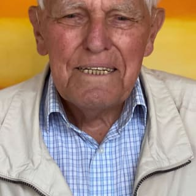
Dieter Schittek
Christiane Schröter
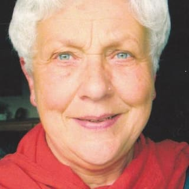
Ursula Schulz
Dr. Gudrun Schölzchen
Ilka Seehausen
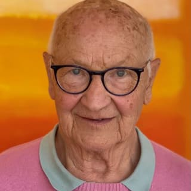
Dieter Seyfarth
Ortrud Seyfarth
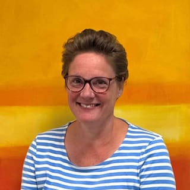
Mareike Siefken
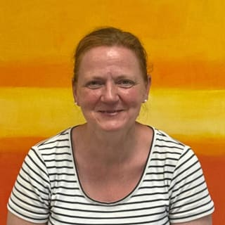
Patricia Standke
Regina Stöckel-Dirk
Anke Tapken-Gutjahr
Ursula Vellage
Barbara Weber
Gudrun Weber
Britta Wichmann
Irina Wiezorrek
Jessica Zahn
Begleitung ist persönlich
Jede Begleitung ist anders und richtet sich nach den Wünschen und Bedürfnissen der Menschen und ihrer Angehörigen. Unsere Ehrenamtlichen begleiten dort, wo sie gebraucht werden: zu Hause, im Krankenhaus oder im Pflegeheim. Wie oft und wann eine Begleitung stattfindet, wird individuell vereinbart.
Oft entsteht dabei eine besondere Verbindung. Vertrauen wächst, Gespräche werden persönlicher und manchmal entsteht für eine begrenzte Zeit sogar Freundschaft.
Wir begleiten nicht, um Antworten zu geben. Wir begleiten, damit niemand allein sein muss.
Gut vorbereitet. Gut begleitet.
Ehrenamtliche Hospizarbeit ist eine verantwortungsvolle Aufgabe. Deshalb werden unsere Mitarbeiterinnen und Mitarbeiter intensiv auf ihre Tätigkeit vorbereitet und regelmäßig weitergebildet – jährlich bieten wir dafür Vorbereitungsseminare für die ambulante Hospizarbeit an.
Auch während ihrer Tätigkeit sind unsere Ehrenamtlichen nicht auf sich allein gestellt: Regelmäßige Supervision hilft ihnen, das Erlebte zu verarbeiten, eigene Grenzen zu spüren und die richtige Nähe zu finden. Bei regelmäßigen Gruppenabenden kommt das Begleitteam zusammen, tauscht Erfahrungen aus und lernt voneinander. Denn Begleitung braucht auch Begleitung.
Hospizarbeit sichtbar machen
Unser Begleitteam engagiert sich nicht nur in der direkten Begleitung. Auch nach außen zu gehen und zu erzählen, was Hospizarbeit bedeutet, gehört zu seinem Einsatz. Wir möchten über Sterben, Tod und Trauer sprechen – offen, verständlich und ohne Berührungsängste. Deshalb sind wir bei Veranstaltungen, auf Messen und mit Infoständen unterwegs.
Unser Ziel: Tod und Sterben sollen ihren Platz mitten im Leben haben. Denn wenn wir darüber sprechen, können Ängste kleiner werden – und wir können uns bewusster mit dem auseinandersetzen, was am Ende des Lebens wirklich wichtig ist.